Passive Mode Switching
Seamless transition between pinching and scooping modes without additional actuators or sensors, driven purely by mechanical interaction with the environment.
Vertical Fingertip Trajectory
Modified Kempe linkage produces a vertical linear fingertip path, enabling stable surface interaction and consistent grasping performance.
Dual Grasping Modes
Effective grasping of thin and flat objects (cards, screws) as well as irregular items (oranges, keychains) that challenge conventional grippers.
This paper presents the SPARK finger, an innovative passive adaptive robotic finger capable of executing both parallel pinching and scooping grasps. The SPARK finger incorporates a multi-link mechanism with Kempe linkages to achieve a vertical linear fingertip trajectory. Furthermore, a parallelogram linkage ensures the fingertip maintains a fixed orientation relative to the base, facilitating precise and stable manipulation.
By integrating these mechanisms with elastic elements, the design enables effective interaction with surfaces, such as tabletops, to handle challenging objects. The finger employs a passive switching mechanism that facilitates seamless transitions between pinching and scooping modes, adapting automatically to various object shapes and environmental constraints without additional actuators. To demonstrate its versatility, the SPARK Hand, equipped with two SPARK fingers, has been developed. Experimental results validate the effectiveness of the SPARK design, highlighting its potential for robotic manipulation in constrained and dynamic environments.
The video demonstrates the SPARK Hand performing three types of grasps: pinching, symmetric scooping, and asymmetric scooping. Various objects, including thin cards, screws, and irregular items, are manipulated to highlight the hand's versatility and adaptability.
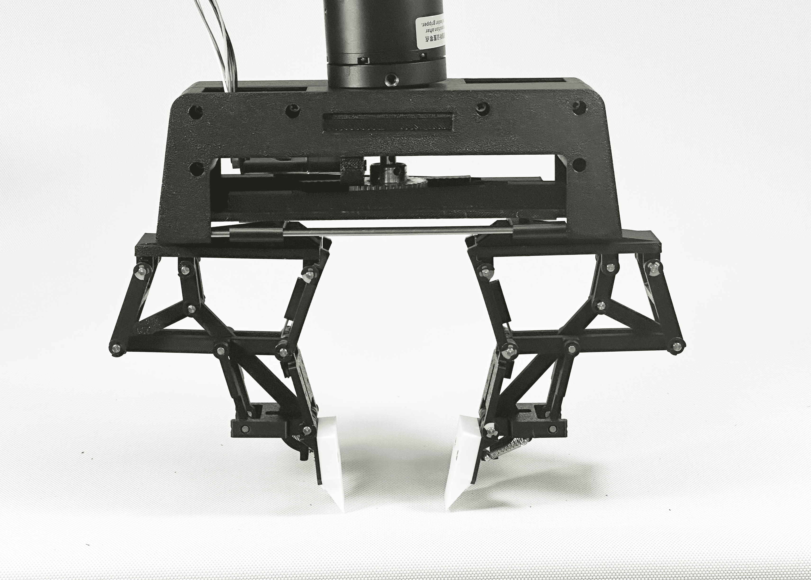
The SPARK Hand: a robotic end-effector consisting of two SPARK fingers on a single base, capable of performing both parallel pinching and scooping grasps.
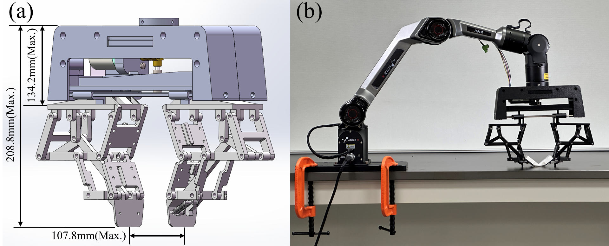
(a) 3D model of the SPARK Hand prototype. (b) Physical implementation mounted on a robotic arm for experimental validation.
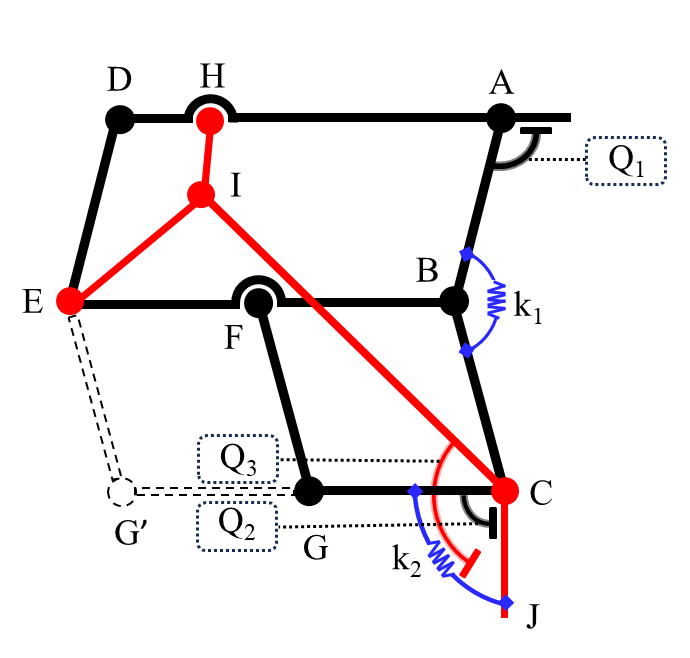
The SPARK finger mechanism consists of three segments — proximal, intermediate, and distal phalanges — interconnected by passive revolute joints. At its core, a modified Kempe linkage generates the vertical linear fingertip trajectory crucial for effective environmental compliance. An integrated parallelogram linkage maintains constant fingertip orientation throughout the grasping motion.
Springs k1 and k2 provide adaptive compliance and restoring forces, while mechanical stoppers (Q1, Q2, Q3) regulate the finger's motion limits, enabling automatic switching between pinching and scooping modes. The link lengths follow a 4:2:1 ratio, ensuring a consistent vertical trajectory while maintaining compactness.
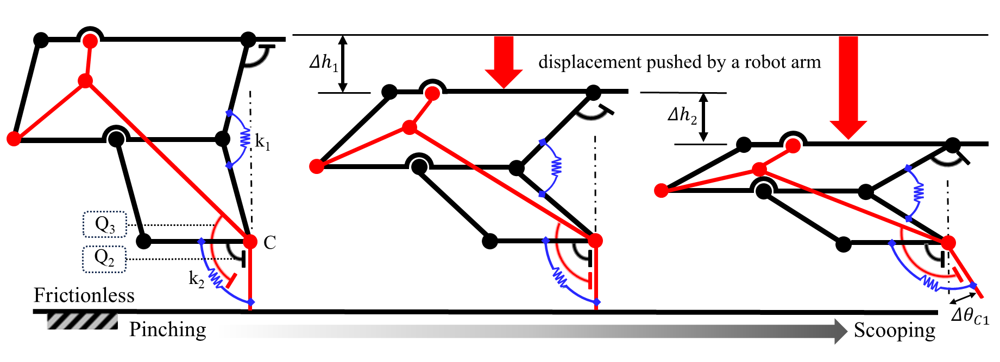
The SPARK finger transitions from pinching (left) to scooping (right) as it presses downward against a surface. Stopper Q2 keeps the distal phalanx straight during pinching; when stopper Q3 engages, the distal phalanx rotates inward for scooping. This transition occurs passively — no additional actuators required.
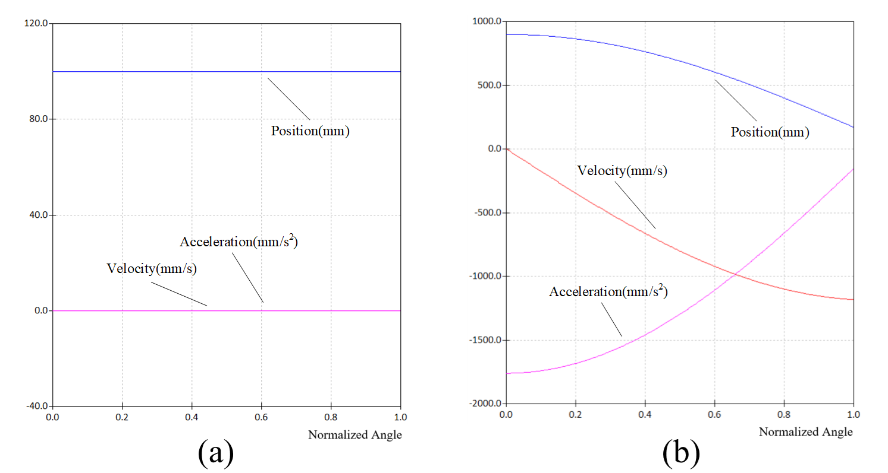
(a) Horizontal displacement of the fingertip during motion: smooth trajectory with minimal lateral deviation at initiation, ideal for handling fragile items. (b) Lateral displacement of the fingertip: remains consistently near zero throughout the motion, confirming the straight vertical trajectory achieved by the modified Kempe linkage.
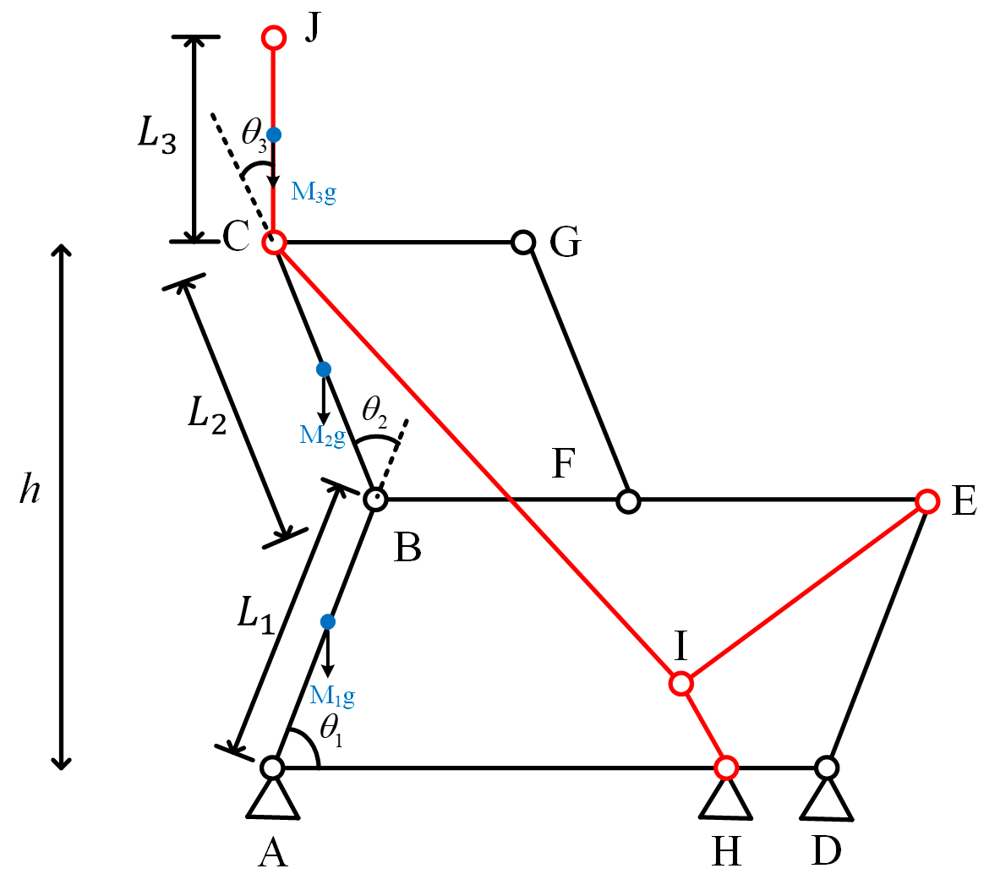
Simplified mathematical model with D-H parameters
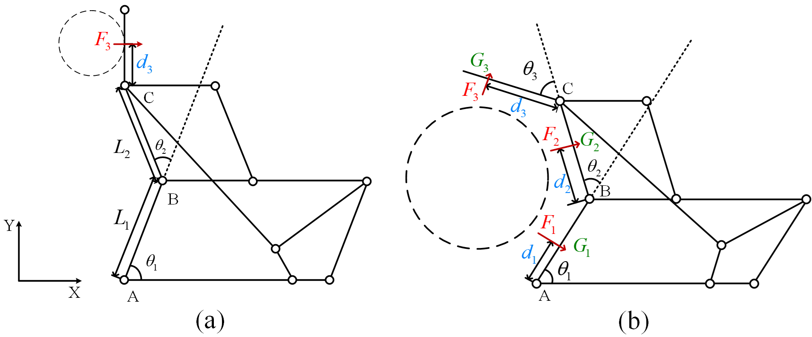
(a) Parallel pinching force analysis; (b) Self-adaptive grasping force analysis
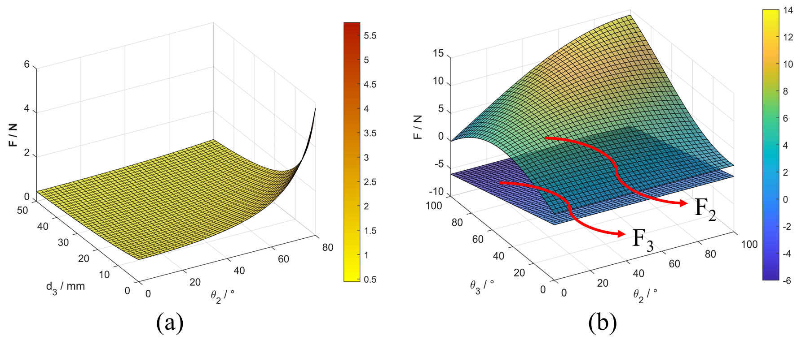
Grasp force analysis: (a) parallel grasp; (b) self-adaptive grasp
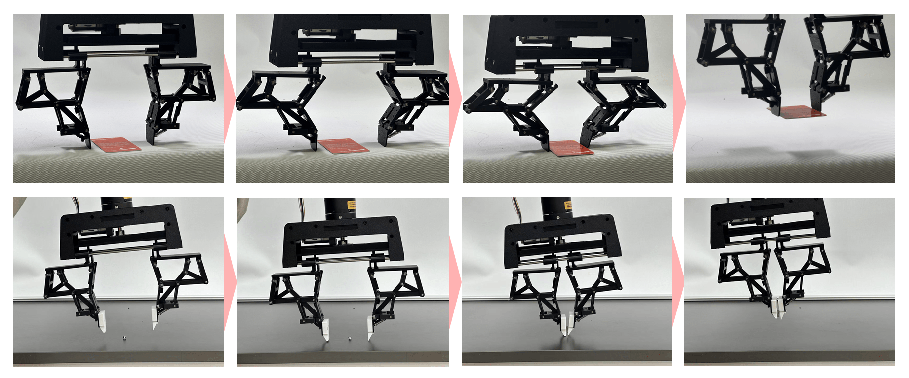
Pinching Grasp
Linear clamping to securely grasp thin objects on a flat surface. Demonstrated with a plastic card and a small screw.
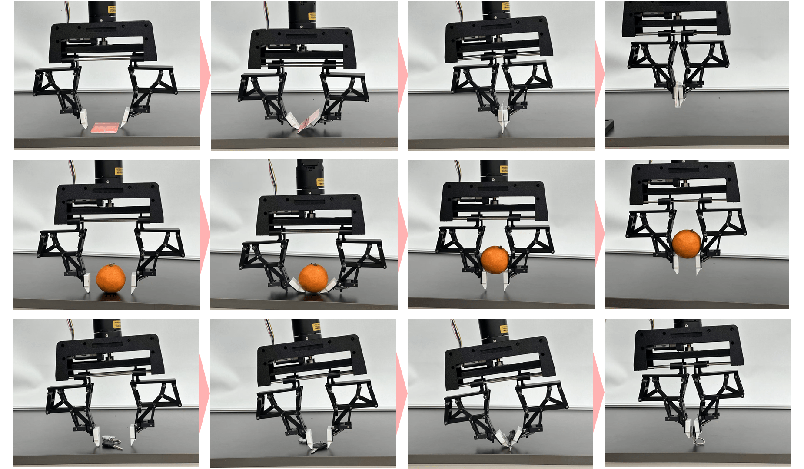
Symmetric Scooping
Both fingers rotate inward symmetrically to slide beneath objects. Tested with a thin card, an orange, and a keychain.
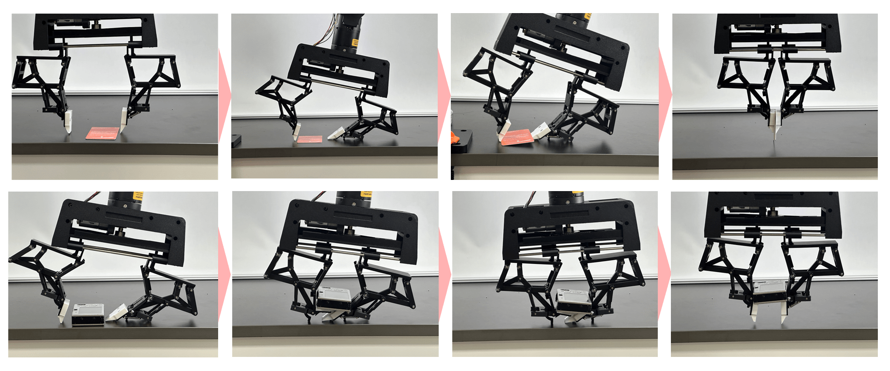
Asymmetric Scooping
Tilted device with one finger scooping while the other supports, effective for wide and thin objects like flat cards.
@inproceedings{11246150,
author = {Yin, Jiaqi and Bi, Tianyi and Zhang, Wenzeng},
booktitle = {2025 IEEE/RSJ International Conference on Intelligent Robots and Systems (IROS)},
title = {{SPARK Hand}: Scooping-Pinching Adaptive Robotic Hand with {Kempe} Mechanism for Vertical Passive Grasp in Environmental Constraints},
year = {2025},
pages = {4729-4734},
doi = {10.1109/IROS60139.2025.11246150}
}